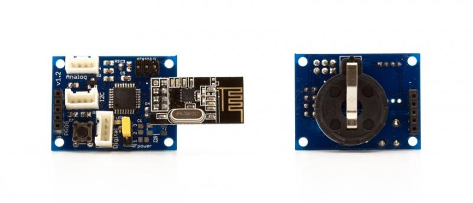

devDuino Sensor Node V1.2 (ATmega 328) is a compact Arduino-compatible microcontroller and is designed to build wireless networks based on transceiver nRF24L01+. You can easily connect other sensors (series Grove) or actuators to this platform, to build your remote monitoring or controlling system..
Model: 830068001

In the basic version (without additional sensors) module can be used as a wireless temperature sensor (using built-in sensor MCP9700, connected to A3) to control the battery charge level (via integrated voltage divider connected to A2).
Basic functionality can be greatly expanded by connecting the various components series GROVE from Seeed Studio.
Also you can use the modules own making, for example, a temperature sensor based on MCP9700 (a temperature sensor similar to that installed on board Sensor Node).
By default, the standard boot stitched microcontroller Arduino, allowing to record the firmware in the module with the type of programmers FOCA v2.2.
Connecting the programmer via 5-pin (PROG) on the module (battery installed when programming is required - module receives power from the programmer)
Warning! Do not forget to set the programmer working voltage of 3.3V. When flashing the bootloader via ISP, be sure to disconnect the wireless module nRF24L01 +.
Just programmer can be used to debug (monitor port).
If you want to get even further about 2K more memory for your sketch, you can use almost any ISP-Programmer for example, Arduino ISP (regular Arduino-compatible board and a standard example of the environment Arduino) or USBtinyISP.
Connecting programmer via 6-pin connector (ISP) on the module (battery installed when programming is required - module receives power from the programmer).
In the first case, to maximize the operating time of a battery should be fitted in use nRF24L01+ power saving mechanisms:
...
radio.powerUp(); //turn the power on NRF24
// sending data
...
radio.powerDown(); //turn off the power on NRF24
...
In the second case power is supplied to a module only when the high level signal D6:
...
digitalWrite(6, HIGH); //turn off the power on NRF24
// sending data
...
digitalWrite(6, LOW); //turn the power on NRF24
...
Button connected to digital pin of D4 without external pull-up resistor. This connection is necessary to use the built-in pull-up resistor microcontroller.
This is done as follows (in the example being polled button once 0.5s and if it is pressed - LED lights):
void setup (){ // button pinMode(4, INPUT); // enable pull-up resistor digitalWrite(4, HIGH); // LED pinMode(9, OUTPUT); } void loop(){ if(digitalRead(4) == LOW) { digitalWrite(9, HIGH); } else { digitalWrite(9, LOW); } delay(500); }
Besides measuring the voltage at the voltage divider with a simple analogRead (A2), you can use more "advanced" way - use the built-in capabilities of the microcontroller.
You can use the following universal function:
long readVcc() {
// Read 1.1V reference against AVcc
// set the reference to Vcc and the measurement to the internal 1.1V reference
#if defined(__AVR_ATmega32U4__) || defined(__AVR_ATmega1280__) || defined(__AVR_ATmega2560__)
ADMUX = _BV(REFS0) | _BV(MUX4) | _BV(MUX3) | _BV(MUX2) | _BV(MUX1);
#elif defined (__AVR_ATtiny24__) || defined(__AVR_ATtiny44__) || defined(__AVR_ATtiny84__)
ADMUX = _BV(MUX5) | _BV(MUX0);
#elif defined (__AVR_ATtiny25__) || defined(__AVR_ATtiny45__) || defined(__AVR_ATtiny85__)
ADMUX = _BV(MUX3) | _BV(MUX2);
#else
ADMUX = _BV(REFS0) | _BV(MUX3) | _BV(MUX2) | _BV(MUX1);
#endif
delay(75); // Wait for Vref to settle
ADCSRA |= _BV(ADSC); // Start conversion
while (bit_is_set(ADCSRA,ADSC)); // measuring
uint8_t low = ADCL; // must read ADCL first - it then locks ADCH
uint8_t high = ADCH; // unlocks both
long result = (high<<8) | low;
result = 1125300L / result; // Calculate Vcc (in mV); 1125300 = 1.1*1023*1000
return result; // Vcc in millivolts
}
The function returns the voltage in millivolts.
In the present pin connector Digital D3. The peculiarity of its use is that this digital signal to the pins of the interrupt can be processed (INT1).
To ensure longer battery module from one battery can reduce the frequency of the microcontroller to 1MHz and lower "threshold" voltage at which it will start to 1.8V.
This is done by adding the following section in the file boards.txt IDE Arduino:
s328o1.name=Sensor328p (int1MHz, 1.8V) s328o1.upload.protocol=arduino s328o1.upload.maximum_size=30720 s328o1.upload.speed=19200 s328o1.bootloader.low_fuses=0x62 s328o1.bootloader.high_fuses=0xda s328o1.bootloader.extended_fuses=0x06 s328o1.bootloader.path=atmega s328o1.bootloader.file=ATmegaBOOT_168_atmega328_pro_8MHz.hex #s328o8.bootloader.file=ATmegaBOOT_168_atmega328.hex s328o1.bootloader.unlock_bits=0x3F s328o1.bootloader.lock_bits=0x0F s328o1.build.mcu=atmega328p s328o1.build.f_cpu=1000000L s328o1.build.core=arduino s328o1.build.variant=standard
After adding this code to the appropriate file (and restarting the Arduino) in the list of available cards will be a new line: Sensor328 (int1MHz, 1.8V)
Warning! Fuse bits specified in the file boards.txt and defining modes of microcontroller sewn Arduino environment only when writing the bootloader (but not the firmware of the microcontroller).
To correct fuse bits without changing the boot loader can be used, for example avrdude GUI
To use the Sensor Node requires the following libraries:
Requires the libraries that are used at work RF24:
Library has used examples of them just to understand how it works.
Initialization RF-module as follows:
... //RF24 radio(CE,CSN); RF24 radio(8,7); ...
| Revision | Description | Release |
| 0.9 | Prototype | 07.06.2013 |
| 1.2 | Public version | 04.11.2013 |
This product can be purchased:
China (shipping worldwide)
Seeed store
Elecrow store
Russia
Devicter store
This documentation is licensed under the Creative Commons Attribution-ShareAlike License 3.0 Source code and libraries are
licensed under GPL/LGPL, see source code files for details.
Wireless communication is a "smart home" RU
Measuring voltage microcontroller
Copyright (c) 2008-2016 Seeed Development Limited (www.seeedstudio.com / www.seeed.cc){kind=link}